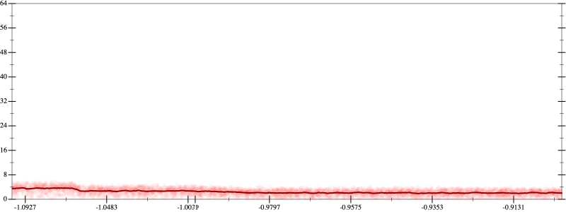
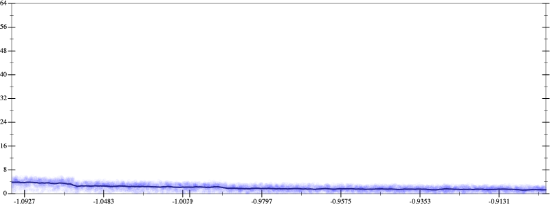
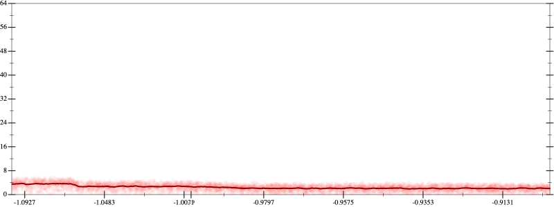
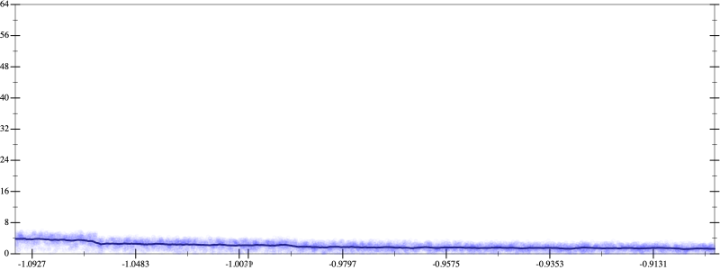

Initial program 2.4
\[\left(\left(\left(\left(\left(17297280.0 \cdot x + -69189120.0 \cdot \left(\left(x \cdot x\right) \cdot x\right)\right) + 69189120.0 \cdot \left(\left(\left(\left(x \cdot x\right) \cdot x\right) \cdot x\right) \cdot x\right)\right) + -26357760.0 \cdot \left(\left(\left(\left(\left(\left(x \cdot x\right) \cdot x\right) \cdot x\right) \cdot x\right) \cdot x\right) \cdot x\right)\right) + 4392960.0 \cdot \left(\left(\left(\left(\left(\left(\left(\left(x \cdot x\right) \cdot x\right) \cdot x\right) \cdot x\right) \cdot x\right) \cdot x\right) \cdot x\right) \cdot x\right)\right) + -319488.0 \cdot \left(\left(\left(\left(\left(\left(\left(\left(\left(\left(x \cdot x\right) \cdot x\right) \cdot x\right) \cdot x\right) \cdot x\right) \cdot x\right) \cdot x\right) \cdot x\right) \cdot x\right) \cdot x\right)\right) + 8192.0 \cdot \left(\left(\left(\left(\left(\left(\left(\left(\left(\left(\left(\left(x \cdot x\right) \cdot x\right) \cdot x\right) \cdot x\right) \cdot x\right) \cdot x\right) \cdot x\right) \cdot x\right) \cdot x\right) \cdot x\right) \cdot x\right) \cdot x\right)\]
Applied simplify2.3
\[\leadsto \color{blue}{\left(\left(x \cdot x\right) \cdot \left({x}^{3} \cdot \left({x}^{3} \cdot {x}^{3}\right)\right)\right) \cdot \left(\left(x \cdot x\right) \cdot 8192.0 + -319488.0\right) + \left(\left(\left(x \cdot x\right) \cdot \left(\left(x \cdot 69189120.0\right) \cdot \left(x \cdot x\right)\right) + \left(17297280.0 \cdot x + \left(x \cdot x\right) \cdot \left(-69189120.0 \cdot x\right)\right)\right) + \left(\left({x}^{3} \cdot {x}^{3}\right) \cdot x\right) \cdot \left(-26357760.0 + x \cdot \left(4392960.0 \cdot x\right)\right)\right)}\]
- Using strategy
rm Applied add-cube-cbrt2.4
\[\leadsto \left(\left(x \cdot x\right) \cdot \left({x}^{3} \cdot \left({x}^{3} \cdot {x}^{3}\right)\right)\right) \cdot \left(\left(x \cdot x\right) \cdot 8192.0 + -319488.0\right) + \left(\left(\left(x \cdot x\right) \cdot \left(\left(x \cdot 69189120.0\right) \cdot \left(x \cdot x\right)\right) + \left(17297280.0 \cdot x + \left(x \cdot x\right) \cdot \left(-69189120.0 \cdot x\right)\right)\right) + \left(\color{blue}{\left(\left(\sqrt[3]{{x}^{3} \cdot {x}^{3}} \cdot \sqrt[3]{{x}^{3} \cdot {x}^{3}}\right) \cdot \sqrt[3]{{x}^{3} \cdot {x}^{3}}\right)} \cdot x\right) \cdot \left(-26357760.0 + x \cdot \left(4392960.0 \cdot x\right)\right)\right)\]
Applied simplify2.2
\[\leadsto \left(\left(x \cdot x\right) \cdot \left({x}^{3} \cdot \left({x}^{3} \cdot {x}^{3}\right)\right)\right) \cdot \left(\left(x \cdot x\right) \cdot 8192.0 + -319488.0\right) + \left(\left(\left(x \cdot x\right) \cdot \left(\left(x \cdot 69189120.0\right) \cdot \left(x \cdot x\right)\right) + \left(17297280.0 \cdot x + \left(x \cdot x\right) \cdot \left(-69189120.0 \cdot x\right)\right)\right) + \left(\left(\color{blue}{\left(\left(x \cdot x\right) \cdot \left(x \cdot x\right)\right)} \cdot \sqrt[3]{{x}^{3} \cdot {x}^{3}}\right) \cdot x\right) \cdot \left(-26357760.0 + x \cdot \left(4392960.0 \cdot x\right)\right)\right)\]
Applied simplify2.1
\[\leadsto \left(\left(x \cdot x\right) \cdot \left({x}^{3} \cdot \left({x}^{3} \cdot {x}^{3}\right)\right)\right) \cdot \left(\left(x \cdot x\right) \cdot 8192.0 + -319488.0\right) + \left(\left(\left(x \cdot x\right) \cdot \left(\left(x \cdot 69189120.0\right) \cdot \left(x \cdot x\right)\right) + \left(17297280.0 \cdot x + \left(x \cdot x\right) \cdot \left(-69189120.0 \cdot x\right)\right)\right) + \left(\left(\left(\left(x \cdot x\right) \cdot \left(x \cdot x\right)\right) \cdot \color{blue}{\sqrt[3]{{\left(x \cdot x\right)}^{3}}}\right) \cdot x\right) \cdot \left(-26357760.0 + x \cdot \left(4392960.0 \cdot x\right)\right)\right)\]
- Using strategy
rm Applied distribute-rgt-in2.1
\[\leadsto \left(\left(x \cdot x\right) \cdot \left({x}^{3} \cdot \left({x}^{3} \cdot {x}^{3}\right)\right)\right) \cdot \left(\left(x \cdot x\right) \cdot 8192.0 + -319488.0\right) + \left(\left(\left(x \cdot x\right) \cdot \left(\left(x \cdot 69189120.0\right) \cdot \left(x \cdot x\right)\right) + \left(17297280.0 \cdot x + \left(x \cdot x\right) \cdot \left(-69189120.0 \cdot x\right)\right)\right) + \color{blue}{\left(-26357760.0 \cdot \left(\left(\left(\left(x \cdot x\right) \cdot \left(x \cdot x\right)\right) \cdot \sqrt[3]{{\left(x \cdot x\right)}^{3}}\right) \cdot x\right) + \left(x \cdot \left(4392960.0 \cdot x\right)\right) \cdot \left(\left(\left(\left(x \cdot x\right) \cdot \left(x \cdot x\right)\right) \cdot \sqrt[3]{{\left(x \cdot x\right)}^{3}}\right) \cdot x\right)\right)}\right)\]
Applied associate-+r+2.1
\[\leadsto \left(\left(x \cdot x\right) \cdot \left({x}^{3} \cdot \left({x}^{3} \cdot {x}^{3}\right)\right)\right) \cdot \left(\left(x \cdot x\right) \cdot 8192.0 + -319488.0\right) + \color{blue}{\left(\left(\left(\left(x \cdot x\right) \cdot \left(\left(x \cdot 69189120.0\right) \cdot \left(x \cdot x\right)\right) + \left(17297280.0 \cdot x + \left(x \cdot x\right) \cdot \left(-69189120.0 \cdot x\right)\right)\right) + -26357760.0 \cdot \left(\left(\left(\left(x \cdot x\right) \cdot \left(x \cdot x\right)\right) \cdot \sqrt[3]{{\left(x \cdot x\right)}^{3}}\right) \cdot x\right)\right) + \left(x \cdot \left(4392960.0 \cdot x\right)\right) \cdot \left(\left(\left(\left(x \cdot x\right) \cdot \left(x \cdot x\right)\right) \cdot \sqrt[3]{{\left(x \cdot x\right)}^{3}}\right) \cdot x\right)\right)}\]
Applied simplify1.9
\[\leadsto \left(\left(x \cdot x\right) \cdot \left({x}^{3} \cdot \left({x}^{3} \cdot {x}^{3}\right)\right)\right) \cdot \left(\left(x \cdot x\right) \cdot 8192.0 + -319488.0\right) + \left(\color{blue}{\left(\left(x \cdot -69189120.0 + \left(x \cdot 69189120.0\right) \cdot \left(x \cdot x\right)\right) \cdot \left(x \cdot x\right) + \left(\left(\left(x \cdot x\right) \cdot \left(x \cdot x\right)\right) \cdot \left(\left(-26357760.0 \cdot x\right) \cdot \left(x \cdot x\right)\right) + x \cdot 17297280.0\right)\right)} + \left(x \cdot \left(4392960.0 \cdot x\right)\right) \cdot \left(\left(\left(\left(x \cdot x\right) \cdot \left(x \cdot x\right)\right) \cdot \sqrt[3]{{\left(x \cdot x\right)}^{3}}\right) \cdot x\right)\right)\]
- Using strategy
rm Applied flip-+2.0
\[\leadsto \left(\left(x \cdot x\right) \cdot \left({x}^{3} \cdot \left({x}^{3} \cdot {x}^{3}\right)\right)\right) \cdot \left(\left(x \cdot x\right) \cdot 8192.0 + -319488.0\right) + \left(\left(\left(x \cdot -69189120.0 + \left(x \cdot 69189120.0\right) \cdot \left(x \cdot x\right)\right) \cdot \left(x \cdot x\right) + \color{blue}{\frac{\left(\left(\left(x \cdot x\right) \cdot \left(x \cdot x\right)\right) \cdot \left(\left(-26357760.0 \cdot x\right) \cdot \left(x \cdot x\right)\right)\right) \cdot \left(\left(\left(x \cdot x\right) \cdot \left(x \cdot x\right)\right) \cdot \left(\left(-26357760.0 \cdot x\right) \cdot \left(x \cdot x\right)\right)\right) - \left(x \cdot 17297280.0\right) \cdot \left(x \cdot 17297280.0\right)}{\left(\left(x \cdot x\right) \cdot \left(x \cdot x\right)\right) \cdot \left(\left(-26357760.0 \cdot x\right) \cdot \left(x \cdot x\right)\right) - x \cdot 17297280.0}}\right) + \left(x \cdot \left(4392960.0 \cdot x\right)\right) \cdot \left(\left(\left(\left(x \cdot x\right) \cdot \left(x \cdot x\right)\right) \cdot \sqrt[3]{{\left(x \cdot x\right)}^{3}}\right) \cdot x\right)\right)\]
- Using strategy
rm Applied flip3--2.0
\[\leadsto \left(\left(x \cdot x\right) \cdot \left({x}^{3} \cdot \left({x}^{3} \cdot {x}^{3}\right)\right)\right) \cdot \left(\left(x \cdot x\right) \cdot 8192.0 + -319488.0\right) + \left(\left(\left(x \cdot -69189120.0 + \left(x \cdot 69189120.0\right) \cdot \left(x \cdot x\right)\right) \cdot \left(x \cdot x\right) + \frac{\color{blue}{\frac{{\left(\left(\left(\left(x \cdot x\right) \cdot \left(x \cdot x\right)\right) \cdot \left(\left(-26357760.0 \cdot x\right) \cdot \left(x \cdot x\right)\right)\right) \cdot \left(\left(\left(x \cdot x\right) \cdot \left(x \cdot x\right)\right) \cdot \left(\left(-26357760.0 \cdot x\right) \cdot \left(x \cdot x\right)\right)\right)\right)}^{3} - {\left(\left(x \cdot 17297280.0\right) \cdot \left(x \cdot 17297280.0\right)\right)}^{3}}{\left(\left(\left(\left(x \cdot x\right) \cdot \left(x \cdot x\right)\right) \cdot \left(\left(-26357760.0 \cdot x\right) \cdot \left(x \cdot x\right)\right)\right) \cdot \left(\left(\left(x \cdot x\right) \cdot \left(x \cdot x\right)\right) \cdot \left(\left(-26357760.0 \cdot x\right) \cdot \left(x \cdot x\right)\right)\right)\right) \cdot \left(\left(\left(\left(x \cdot x\right) \cdot \left(x \cdot x\right)\right) \cdot \left(\left(-26357760.0 \cdot x\right) \cdot \left(x \cdot x\right)\right)\right) \cdot \left(\left(\left(x \cdot x\right) \cdot \left(x \cdot x\right)\right) \cdot \left(\left(-26357760.0 \cdot x\right) \cdot \left(x \cdot x\right)\right)\right)\right) + \left(\left(\left(x \cdot 17297280.0\right) \cdot \left(x \cdot 17297280.0\right)\right) \cdot \left(\left(x \cdot 17297280.0\right) \cdot \left(x \cdot 17297280.0\right)\right) + \left(\left(\left(\left(x \cdot x\right) \cdot \left(x \cdot x\right)\right) \cdot \left(\left(-26357760.0 \cdot x\right) \cdot \left(x \cdot x\right)\right)\right) \cdot \left(\left(\left(x \cdot x\right) \cdot \left(x \cdot x\right)\right) \cdot \left(\left(-26357760.0 \cdot x\right) \cdot \left(x \cdot x\right)\right)\right)\right) \cdot \left(\left(x \cdot 17297280.0\right) \cdot \left(x \cdot 17297280.0\right)\right)\right)}}}{\left(\left(x \cdot x\right) \cdot \left(x \cdot x\right)\right) \cdot \left(\left(-26357760.0 \cdot x\right) \cdot \left(x \cdot x\right)\right) - x \cdot 17297280.0}\right) + \left(x \cdot \left(4392960.0 \cdot x\right)\right) \cdot \left(\left(\left(\left(x \cdot x\right) \cdot \left(x \cdot x\right)\right) \cdot \sqrt[3]{{\left(x \cdot x\right)}^{3}}\right) \cdot x\right)\right)\]
Applied simplify2.0
\[\leadsto \left(\left(x \cdot x\right) \cdot \left({x}^{3} \cdot \left({x}^{3} \cdot {x}^{3}\right)\right)\right) \cdot \left(\left(x \cdot x\right) \cdot 8192.0 + -319488.0\right) + \left(\left(\left(x \cdot -69189120.0 + \left(x \cdot 69189120.0\right) \cdot \left(x \cdot x\right)\right) \cdot \left(x \cdot x\right) + \frac{\frac{{\left(\left(\left(\left(x \cdot x\right) \cdot \left(x \cdot x\right)\right) \cdot \left(\left(-26357760.0 \cdot x\right) \cdot \left(x \cdot x\right)\right)\right) \cdot \left(\left(\left(x \cdot x\right) \cdot \left(x \cdot x\right)\right) \cdot \left(\left(-26357760.0 \cdot x\right) \cdot \left(x \cdot x\right)\right)\right)\right)}^{3} - {\left(\left(x \cdot 17297280.0\right) \cdot \left(x \cdot 17297280.0\right)\right)}^{3}}{\color{blue}{\left({\left(\left(\left(x \cdot x\right) \cdot \left(x \cdot x\right)\right) \cdot \left(\left(x \cdot x\right) \cdot \left(-26357760.0 \cdot x\right)\right)\right)}^{\left(3 + 1\right)} + {\left(17297280.0 \cdot x\right)}^{\left(3 + 1\right)}\right) + \left(\left(17297280.0 \cdot x\right) \cdot \left(\left(\left(x \cdot x\right) \cdot \left(x \cdot x\right)\right) \cdot \left(\left(x \cdot x\right) \cdot \left(-26357760.0 \cdot x\right)\right)\right)\right) \cdot \left(\left(17297280.0 \cdot x\right) \cdot \left(\left(\left(x \cdot x\right) \cdot \left(x \cdot x\right)\right) \cdot \left(\left(x \cdot x\right) \cdot \left(-26357760.0 \cdot x\right)\right)\right)\right)}}}{\left(\left(x \cdot x\right) \cdot \left(x \cdot x\right)\right) \cdot \left(\left(-26357760.0 \cdot x\right) \cdot \left(x \cdot x\right)\right) - x \cdot 17297280.0}\right) + \left(x \cdot \left(4392960.0 \cdot x\right)\right) \cdot \left(\left(\left(\left(x \cdot x\right) \cdot \left(x \cdot x\right)\right) \cdot \sqrt[3]{{\left(x \cdot x\right)}^{3}}\right) \cdot x\right)\right)\]
 
